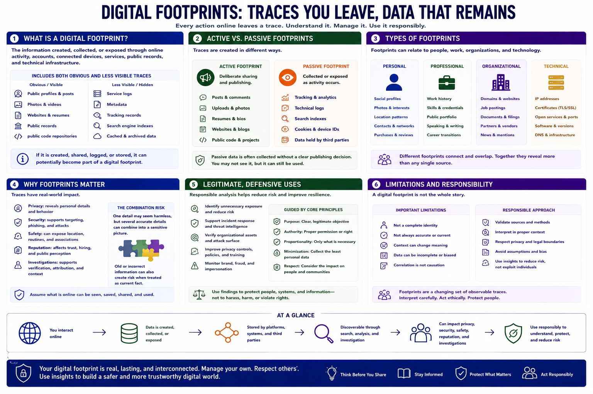

What Is a Digital Footprint?
Connecting to LMS... Progress: in progress

Narration
A digital footprint is the information created, collected, or exposed through online activity, accounts, connected devices, services, public records, and technical infrastructure. It includes obvious material such as a public profile and less visible traces such as service logs, metadata, and indexed records.
An active footprint comes from deliberate sharing: posts, comments, uploads, resumes, websites, or public code. A passive footprint is collected or exposed as activity occurs, sometimes without a clear publishing decision. Examples include tracking records, technical logs, search indexes, and data held by third parties.
Footprints can be personal, professional, organizational, or technical. A professional profile may reveal work history. An organization may expose domains, job postings, documents, and partners. Technical systems leave observable records such as certificates, public services, and software characteristics.
These traces matter because they affect privacy, security, safety, reputation, and investigations. One detail may seem harmless, but several accurate details can combine into a sensitive picture. Old or incorrect information can also create risk when it is treated as current fact.
Legitimate defensive analysis can identify unnecessary exposure, support incident response, verify organizational assets, and improve privacy controls. It should be bounded by purpose, authority, proportionality, and respect for people affected by the information.
A digital footprint is not a complete identity or a guaranteed truth. It is a changing set of observable traces that must be interpreted in context. Responsible work validates sources, minimizes personal data, and uses findings to reduce risk rather than exploit individuals.